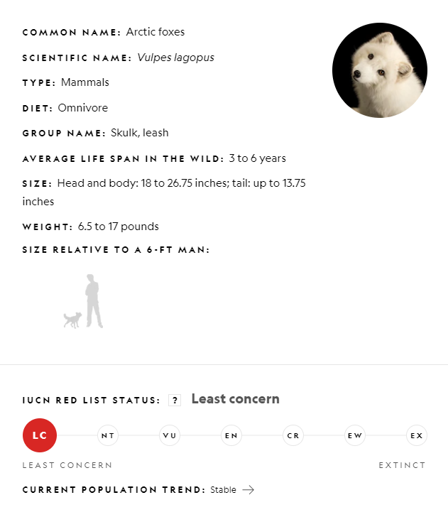

Artic Fox
The arctic fox is an incredibly hardy animal that can survive frigid Arctic temperatures as low as –58°F in the treeless lands where it makes its home. It has furry soles, short ears, and a short muzzle—all-important adaptations to the chilly clime. Arctic foxes live in burrows, and in a blizzard they may tunnel into the snow to create shelter.